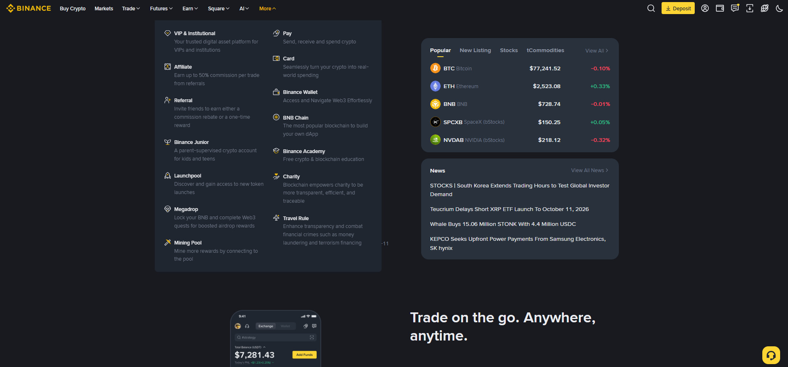

بائننس کا ڈیسک ٹاپ ورژن اور موبائل ایپ ایک ہی اکاؤنٹ اور ایک ہی مارکیٹ دکھاتے ہیں، لیکن دونوں کا تجربہ مختلف ہے۔ صحیح حکمت عملی یہ ہے کہ دونوں کو ان کی طاقت کے مطابق استعمال کریں — نہ صرف ایک پر انحصار کریں۔

تصویر 45.1: بائننس ایپ کا More مینو — وہ تمام اضافی فیچرز (Earn، Launchpad، Bots، Sub-account، API وغیرہ) جن تک مین مینو سے رسائی ممکن ہے؛ ڈیسک ٹاپ پر یہی فیچرز اوپر والے مینو میں براہِ راست دستیاب ہوتے ہیں۔ (Binance app's More menu — all extra features (Earn, Launchpad, Bots, Sub-account, API etc.) accessible from the main menu; on desktop these appear directly in the top menu.)
🎯 اس باب میں آپ سیکھیں گے
موبائل ایپ اور ڈیسک ٹاپ کے بنیادی فرق
کون سا کام موبائل پر بہتر اور کون سا ڈیسک ٹاپ پر
رفتار اور تجزیے میں توازن کیسے بنائیں
دونوں کے مخصوص رسک اور احتیاط
اپنے لیے صحیح "ورک فلو" (روزمرہ معمول) کیسے بنائیں
📖 45.1 پانچ بنیادی فرق
پہلو
موبائل ایپ
ڈیسک ٹاپ
اسکرین
چھوٹی؛ سادہ ترتیب
بڑی؛ ایک نظر میں سب
Chart
بنیادی ٹولز
مکمل TradingView، Sketch، Multi-Chart
رفتار
بہت تیز (پش اطلاعات)
تیز مگر وہی جگہ چاہیے
فیچرز
اہم فیچرز موجود، کچھ گہرے فیچرز کم
مکمل، بشمول API، Sub-account، Margin تفصیل
رسک
غلط ٹیپ، اسکرین کی نظر، گمشدہ فون
عوامی کمپیوٹر، سیشن کھلا چھوڑنا
چھوٹی اسکرین کا عملی فرق:
موبائل پر: 1 اسکرین = 1 عمل (مثلاً: Spot Trade ایک اسکرین)
ڈیسک ٹاپ: 1 اسکرین = 4-5 چیزیں ایک ساتھ (Chart + Orderbook + Trade History + Order Form)
نتیجہ: موبائل پر جلدی کام آسان، مگر تجزیہ میں بار بار اسکرین بدلنا پڑتا ہے